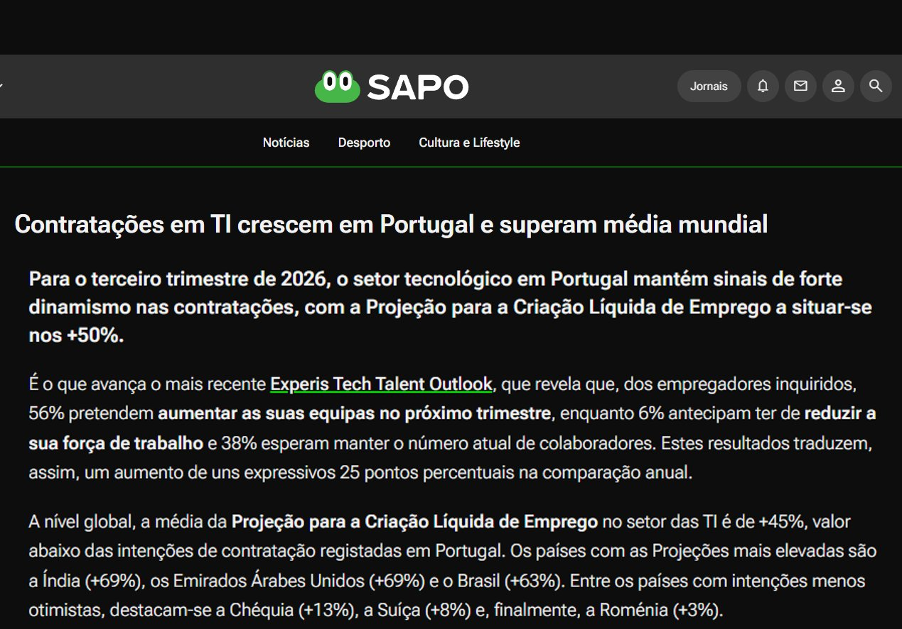
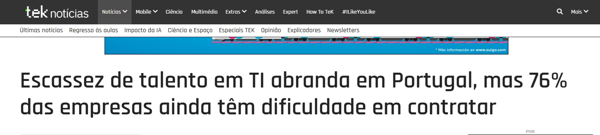
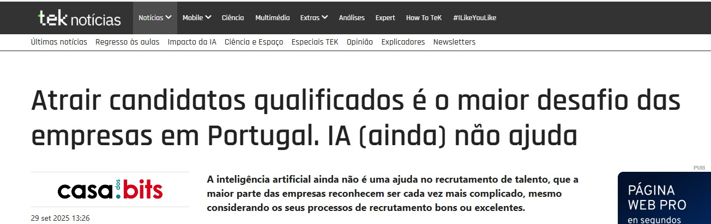

O setor tecnológico em Portugal cresce a um ritmo acelerado — e os profissionais qualificados estão cada vez mais em falta. A oportunidade é agora.
De acordo com um estudo da Experis, quase 60% das empresas planeiam reforçar equipas, refletindo a aceleração da transformação digital e novos projetos especializados.
O setor de IT em Portugal antecipa um crescimento significativo na criação líquida de emprego para o primeiro trimestre de 2026, alcançando uma projeção de +36% — um aumento de 19 pontos percentuais face ao mesmo período do ano anterior, posicionando Portugal como o nono país com as intenções de contratação mais otimistas, um ponto percentual acima da média global.

Para o terceiro trimestre de 2026, o setor tecnológico mantém sinais de forte dinamismo, com a Projeção para a Criação Líquida de Emprego a situar-se nos +50% — acima da média global de +45%.

Apesar de alguma melhoria, a procura por profissionais qualificados supera largamente a oferta disponível no mercado português.

A inteligência artificial ainda não é uma ajuda no recrutamento de talento, que a maior parte das empresas reconhecem ser cada vez mais complicado, mesmo considerando os seus processos de recrutamento bons ou excelentes.
Este cenário representa uma oportunidade única para quem investe na sua qualificação técnica — profissionais certificados e com competências comprovadas têm cada vez mais vantagem num mercado com escassez de talento.
Com 76% das empresas a ter dificuldade em contratar e o setor a crescer mais de 50% ao ano, nunca houve um momento tão favorável para entrar no mercado de IT em Portugal com uma certificação reconhecida internacionalmente.